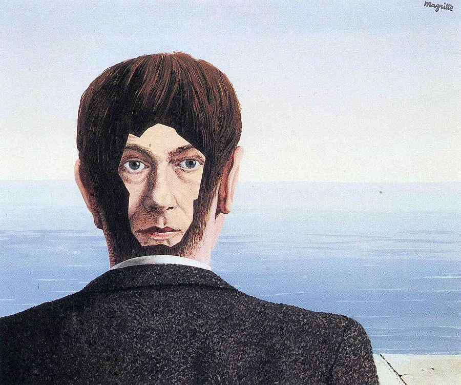
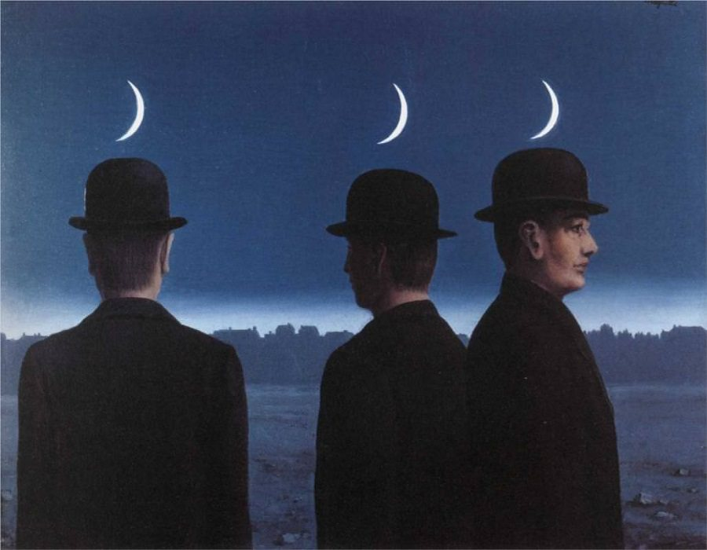
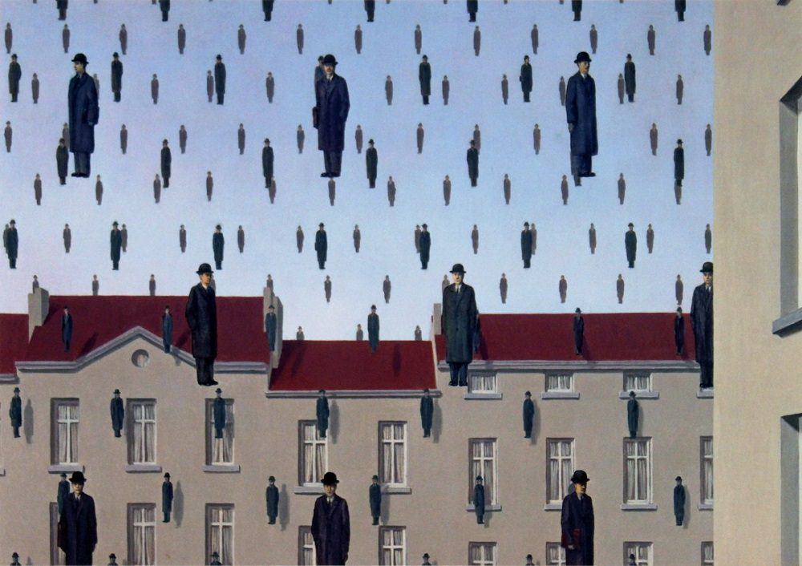

René Magritte
René François Ghislain Magritte (Lessines, 21. studenog 1898. – Bruxelles, 15. kolovoza 1967.) je bio belgijski slikar nadrealizma. Poznat je po domišljatim slikama, u kojima je stvarne objekte prikazivao u inače nemogućim odnosima.
Život

René Magritte se rodio u gradu Lessines u Belgiji 1898. Imao je dva mlađa brata, Raymonda i Paula. Njegova obitelj se preselila u Chatelet gdje je sa 12 godina počeo slikati. Kada je imao 14 godina, njegova majka je počinila samoubojstvo utopivši se u rijeci Sambre. Magrite je bio prisutan kada je njen leš izvučen iz vode, a prizor njegove majke koja pluta i čija haljina prikriva njeno lice postao je slavan u njegovoj amant seriji. Studirao je na akademiji Royale des Beaux-Arts u Bruxellesu dvije godine sve do 1918. Tijekom tog vremena je upoznao Georgette Berger s kojom se vjenčao 1922.
Magritte je radio u tvornici tapeta te je bio dizajner plakata i reklama sve do 1926. kada je dobio ugovor sa galerijom la Centaure u Bruxellesu te dobio mogućnost slikati cijelo vrijeme. 1926. je proizveo svoju prvu surealnu sliku, “Le jockey perdu”, te održao svoju prvu izložbu godinu dana kasnije, koja je pak bila neuspjeh. Razočaran, preselio se u Pariz gdje se sprijateljio sa Andréom Bretonom i upustio u surealnu grupu. Kada se galerija zatvorila njegov ugovor je završen te se vratio u Bruxelles gdje je radio u reklamiranju. 1928. mu je umro otac.
Tijekom njemačke okupacije Belgije za vrijeme 2. svjetskog rata ostao je u Bruxellesu, što je dovelo do raskola sa Bretonom. Njegova djela su se pokazala u SAD-u u New Yorku 1936. I Salvador Dali je bio jedan od njegovih poznanika. Magritte je umro od raka gušterače 1967.
Filozofske i umjetničke geste

Giorgio de Chirico je svojim metafizičkim slikama utjecao na Magrittea. Odlučio je “slikati samo objekte sa naočitim detaljima” te se okrenuo nadrealnim stilom. Njegova djela izlažu obične objekte u neobičnim okolnostima ili u čudnom kontekstu, dajući im nova značenja. Primjerice, u „La trahison des images“ (varke slika) naslikana je lula koja izgleda kao model za neku reklamu duhana. Ispod lule je napisao; „Ovo nije lula“, što isprva zvuči na kontradikciju, ali je zapravo istinito; to nije prava lula, nego samo njena slika.
U tome se zrcali njegova filozofija da bez obzira na to koliko neki objekt bio realistično nacrtan, ljudi ga nikada ne mogu percipirati kao stvarnog nego samo njegovu sliku. Po nekima se njegova snovita, apstraktna i simbolična djela mogu interpretirati kao komentar na psihoanalizu i Sigmunda Freuda.
Sam Magritte je opisao svoje slike izjavivši; „Moje slike su vidljivi prizori koji ništa ne skrivaju; one izazivaju misteriju i, doista, kada netko gleda moje slike, postavi si jednostavno pitanje; „Što to znači?“ Ne znači ništa, jer ni misterija ne znači ništa, ona je nespoznatljiva“.
Utjecaj na popularnu kulturu
- Jeff Beck grupa je reproducirala Magritteovu sliku „The Listening Room“ na omotu njihovog albuma Beck-Ola iz 1969.
- Glazbeni spot za pjesmu “Time Heals” iz 1981. koju je napisao Todd Rundgren sadrži u pozadini hrpu slika Magrittea i Salvadora Dalija.
- U britanskoj TV seriji “Sapphire & Steel” pojava duha bez lica i fotografija u kojima se skriva se oslanja na djelima Magrittea.
- Demeter Fragrances ima parfem zvan “Ovo nije lula”.
- U filmu “Toys” iz 1992. Robin Williams i Joan Cusack naprave lažni glazbeni spot za “The Mirror Song” koji se inspirirao Magritteovim slikama “Sin čovjeka” i “Golconda”.
- Na omotu albuma “Casually Dressed & Deep in Conversation” od grupe Welsh Emocore “Pogreb za prijatelja” se zasniva na Magritteovoj slici “Ljubavnici”.
- Paul McCartney je velik obožavatelj Magrittea te posjeduje mnoge njegove slike.



Djela


- 1920. Krajolik
- 1922. Stanica
- 1926. Um putnika
- 1927. Značenje noći
- 1928. Prazna maska
- 1929. Varka slika
- 1932. Demaskirani svemir
- 1935. Ljudsko stanje
- 1943. Univerzalna gravitacija
- 1953. Golconda
- 1955. Misterije horizonta
- 1964. Sin čovjeka
Karta Lessinesa, Belgija